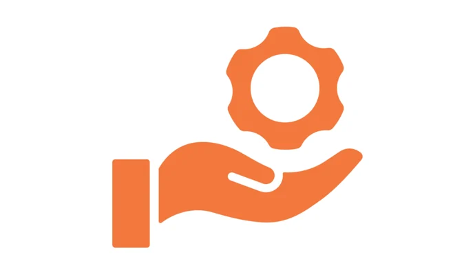

Mes Compétences
Compétences Métier
University of Sydney
- Organisation d’événements : J’ai géré la planification de salons internationaux, en coordonnant les dates, les équipes, et les besoins logistiques.
- Mise à jour des contenus : Je mettais régulièrement à jour les infos sur les programmes destinés aux étudiants internationaux.
- Travail d’équipe : J’ai collaboré avec des collègues australiens et d’autres pays, ce qui m’a permis de bosser dans un vrai contexte international.
- Analyse de résultats : J’ai assuré le suivi des événements pour en tirer des bilans clairs et proposer des axes d’amélioration.
Groupe Rocher
- Veille techno : J’étais curieux d’explorer de nouvelles pistes techniques pour renforcer la sécurité des systèmes.
- Résolution de bugs : J’ai résolu pas mal de soucis techniques pendant les tests de reprise après sinistre.
- Prototypes & tests : J’ai créé et testé des maquettes pour m’assurer que les plans de secours fonctionnaient vraiment.
- Architecture réseau : J’ai aussi participé à la réflexion autour de systèmes plus résilients.
- Électronique embarquée : J’ai touché aux bases des systèmes de surveillance, un domaine super intéressant.
Compétences Techniques
- Langages : Python, C, Java, C++, JavaScript, HTML/CSS, SQL
- Dev Web & App : Node.js, React, Flutter, Android Studio
- Réseaux : TCP/IP, DNS, HTTP, SSH, VPN
- Systèmes : Linux, Windows, Ubuntu
- Versioning : Git, GitHub, GitLab

Compétences Humaines
- Gestion de projet : J’ai souvent piloté des projets à plusieurs, en gardant les deadlines et les priorités bien en tête.
- Communication : J’essaie toujours d’être clair, que ce soit à l’oral ou à l’écrit. Et je m’adapte bien aux différents profils dans une équipe.
- Adaptabilité : Je suis à l’aise pour changer de contexte, tester de nouvelles méthodes, ou apprendre des outils rapidement.
- Leadership : J’ai su prendre l’initiative et motiver les autres dans pas mal de situations de groupe.